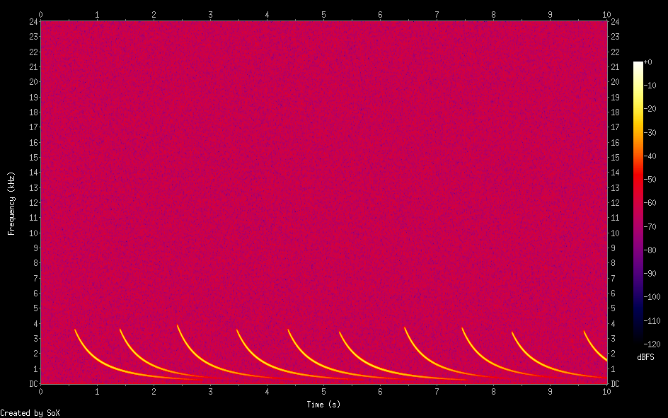
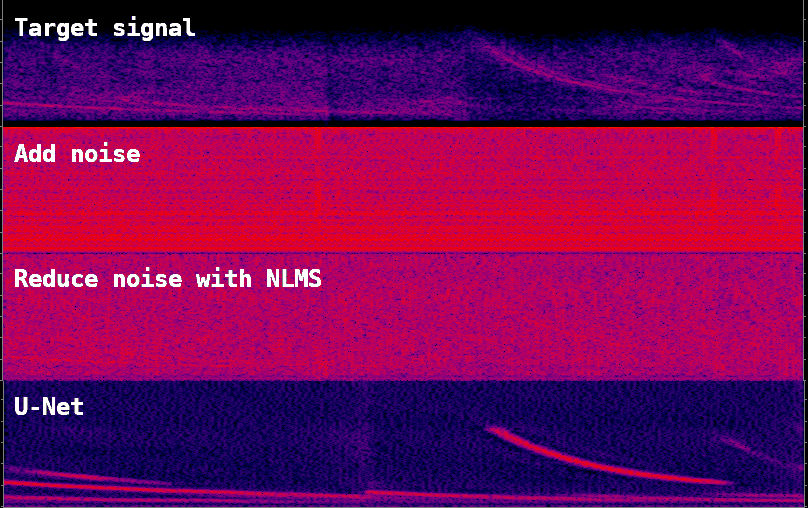

ML による信号検知
磁気ピックアップで得られた ELF 信号中のノイズに埋もれた目的信号の検出に ML を使えないかというのをいろいろ試してきたのですがなかなかうまくいっていません
現在までの試みやその結果についてまとめてみました
すでにノイズの学習で実験したように LSTM でELF 信号中のノイズの予測器をつくることは簡単なのですが、困ったことに目的とする whistler wave 信号は短い時間では線スペクトルを持つノイズ成分に近いため、単純な LSTM や TCN ではノイズと同様に予測されてしまいノイズとの分離ができません
ノイズリダクションに使われる例が多い LSTM autoencoder モデルもこの場合のように
- ノイズと目的信号のレベルが近い
- 目的信号が短い時間ではノイズと区別が難しい
という条件では良い結果が得られませんでした
大きなタイムステップを持つ LSTM や TCN だと良くなりそうなのですがこれは普通の計算資源では実現が困難です
今のところ線スペクトルを持つ成分の分離/削減についてはクラシカルな線形予測器を上回るような結果が出せていません
別の方向として線スペクトルノイズのリダクションを線形予測器で行った後での目標信号の検知に ML が使えないかというのを文献[1]をヒントに試してみました
文献[1]では音響信号のデノイズを行うために音響信号を STFT で周波数領域に変換して U-Net autoencoder でノイズのない信号を予測し、最後に inverse STFT で時間領域の音響信号に戻すことでノイズリダクションを行っています
そこで whistler wave の形をしたいろいろな synthetic signal を作り

それと線スペクトルノイズのリダクションまでを行った複数の実際の ELF 信号と足し合わせてノイズのある信号とし、そこから whistler wave 信号を復元するように U-Net autoencoder を学習させました
実際に観測された whistler 波とELFノイズを合成し線形予測器でノイズリダクションした後、学習済みモデルで信号を予測してみました

この結果を見てもわかるのですがうまく予測されている信号、予測できなかった信号の他に偽の信号が生成されることがあります
現在の学習データだと学習時に epoch を増やしすぎると偽の信号が生成されやすくなるようです
なおモデルは convolution 層後の活性化関数として ReLU ではなく leaky ReLU を使っていますが、その方が学習時の挙動が落ち着いているようです. GeLU でも同様の傾向を示していました
References
[1] https://github.com/rdadlaney/Audio-Denoiser-CNN.git